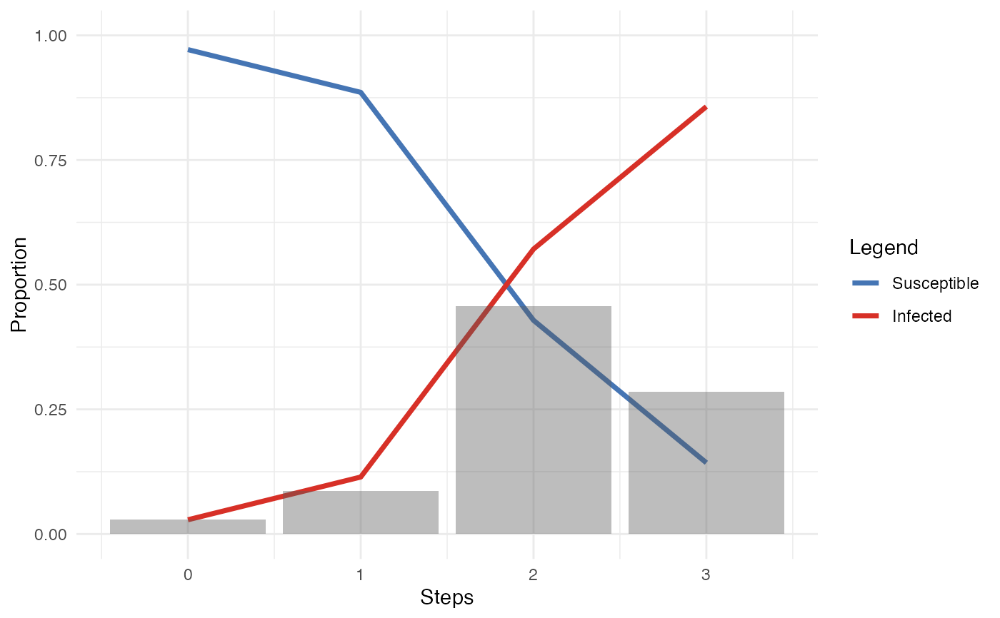
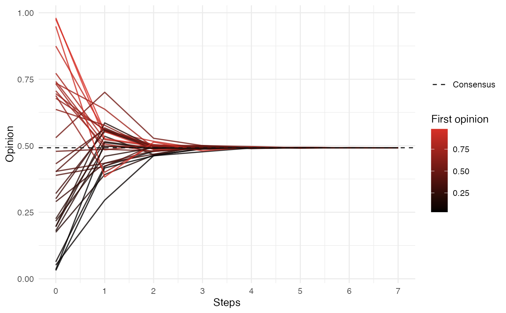
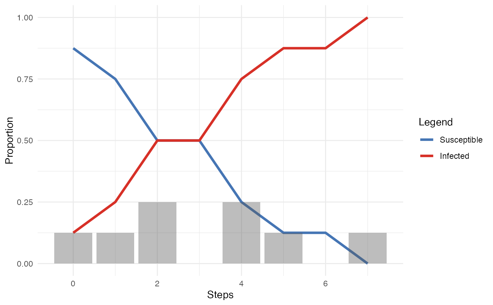

Plotting diffusion models
Usage
# S3 method for class 'diff_model'
plot(x, ..., all_steps = TRUE)
# S3 method for class 'diffs_model'
plot(x, ..., observed = NULL, level = 0.95)
# S3 method for class 'diffusionSweep'
plot(x, ..., level = 0.95)
# S3 method for class 'learn_model'
plot(x, ...)
# S3 method for class 'diffusionModel'
plot(x, ..., all_steps = TRUE)Arguments
- x
A "diff_model", "diffs_model", or "diffusionSweep" class of object. E.g. as a result from
manynet::play_diffusion().- ...
Other arguments to be passed.
- all_steps
Whether all steps should be plotted or just those where there is change in the distributions.
- observed
Optionally, an observed diffusion to draw over the simulated diffusions: a network with a record of a diffusion, as from
manynet::play_diffusion(), or a 'diffusionModel', as frommanynet::as_diffusion().- level
The share of the simulated diffusions that the band holds at each step. By default 0.95.
Value
plot.diff_model() returns a bar chart of the number of new
infected nodes at each time point, as well as an overlay line plot of the
total in each value
plot.diffs_model() returns a line plot of the simulated
diffusions, or, with observed, a band of the simulated diffusions
with the observed diffusion over it.
plot.diffusionSweep() returns a plot of the share of the nodes
infected for each setting of a sweep.
Details
plot.diff_model() draws one line for each value of the attribute
that the diffusion changes,
and bars for the nodes that become infectious at each step.
A diffusion in the values S, E, I, R, and D names them
"Susceptible", "Exposed", "Infected", "Recovered", and "Dead".
A diffusion in values of its own,
as from manynet::play_diffusion(compartments = ),
names the lines by these values.
The roles in attr(x, "compartments") give the colours:
blue for S, yellow for E, red for I, green for R,
and black for D.
The bars count the new nodes in the first value of I.
plot.diffs_model() draws the simulated diffusions,
as from infernet::play_diffusions().
Without observed, it draws a smoothed line for each value.
With observed, it draws the proportion of the nodes in the
infectious value at each step:
a band that holds the middle level of the simulated diffusions,
a dashed line for their median,
and the observed diffusion over them.
This is the curve that infernet::test_gof() compares.
A diffusion that ends before the others keeps its last value
until the last step, as in infernet::test_gof().
plot.diffusionSweep() draws the share of the nodes that were infected
for each setting of a sweep, as from infernet::sweep_diffusion().
The first argument in vary is on the horizontal axis.
A sweep compares settings, so each setting is a bar, even where the
settings are numbers: the median of its runs, labelled with its value
where there are 12 bars or fewer, with a line for the middle level of
the runs where they differ.
Each value of any other argument in vary has a panel of its own.
A node that is reinfected counts again, so the share can be above 100%.
plot.diffusionModel() draws a 'diffusionModel',
as from manynet::as_diffusion(),
as plot.diff_model() does.
Examples
plot(res_manynet_diff)

plot(res_migraph_diff)
#> Warning: pseudoinverse used at -0.015
#> Warning: neighborhood radius 2.015
#> Warning: reciprocal condition number 4.9596e-17
#> Warning: There are other near singularities as well. 4.0602
#> Warning: pseudoinverse used at -0.015
#> Warning: neighborhood radius 2.015
#> Warning: reciprocal condition number 4.9596e-17
#> Warning: There are other near singularities as well. 4.0602
#> Warning: pseudoinverse used at -0.015
#> Warning: neighborhood radius 2.015
#> Warning: reciprocal condition number 4.9596e-17
#> Warning: There are other near singularities as well. 4.0602
#> Warning: pseudoinverse used at -0.015
#> Warning: neighborhood radius 2.015
#> Warning: reciprocal condition number 4.9596e-17
#> Warning: There are other near singularities as well. 4.0602

plot(play_learning(ison_networkers, beliefs = runif(net_nodes(ison_networkers))))
#> Warning: `play_learning()` is deprecated. Use `play_opinion()` instead.
#> ℹ See `help('defunct', package = 'manynet')`.

set.seed(1)
plot(manynet::as_diffusion(manynet::play_diffusion(manynet::ison_adolescents,
seeds = 1, transmissibility = 0.5)))
